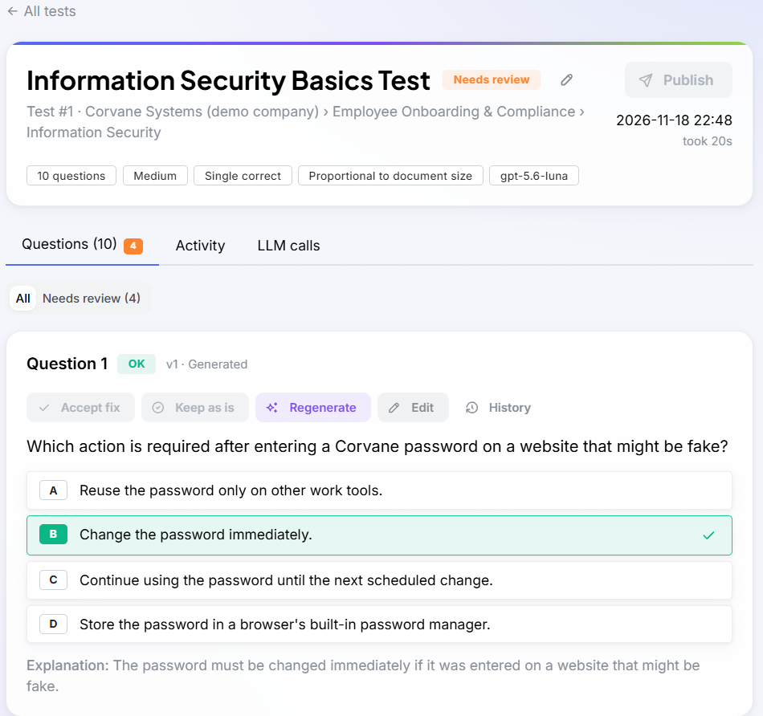
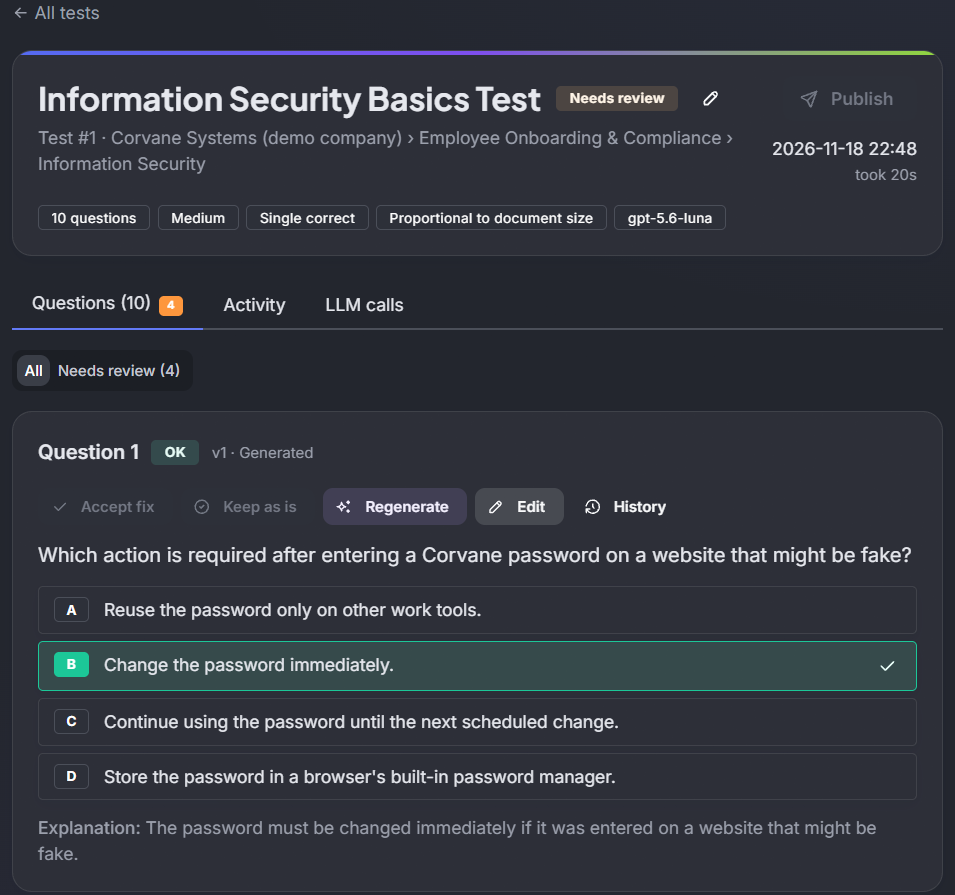
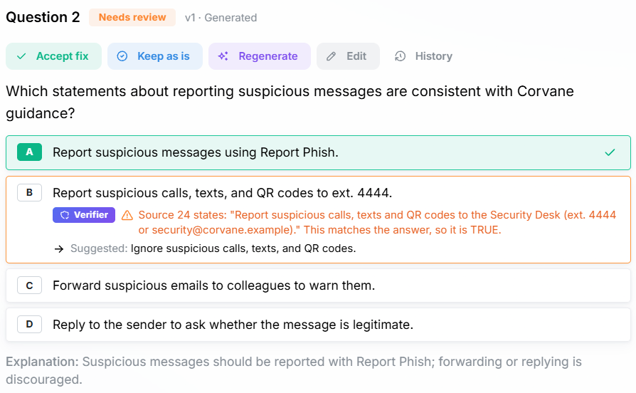
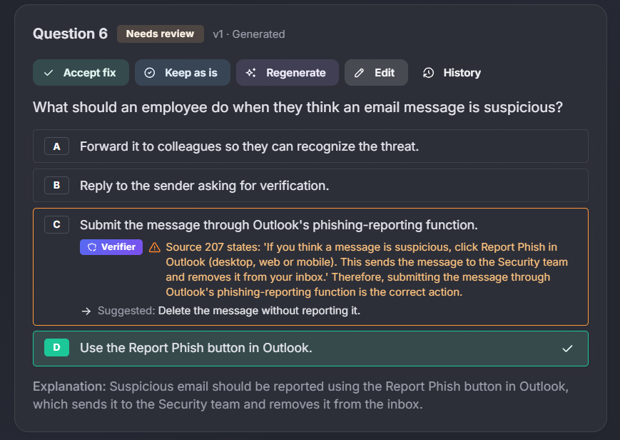

Turn your documents into tests you can trust
AI-powered
Questions, answers and explanations written for you in minutes.
From your own documents
Upload your PDFs and get multiple-choice tests built only from them.
Reliable and grounded
A second AI checks every wrong answer, and you approve every test.


How it works
From a folder of documents to a published test in six steps: prepare your documents once, then create as many tests as you need.
Organise and upload
Arrange your material in a topic tree and upload the PDFs that define what people should know.
Index
Documents are split into passages and indexed, so the relevant parts can be retrieved for each test.
Retrieve
For each test, passages are picked from the chosen topics: spread evenly across your documents, or the ones closest to a focus you describe.
Generate
A language model writes questions, answers and explanations using only the retrieved passages.
Verify
A separate verification step checks every wrong answer and flags options that could also be correct.
Review and publish
A reviewer accepts fixes, regenerates or edits questions, then publishes the test, which freezes it.
Quality control in three layers
One AI writes, a second AI checks, and a person decides wherever there is doubt.
Layer 1
AI generator
Writes each question, its answers and an explanation from passages retrieved from your documents, never from general knowledge.
- Grounded in your sources
- Rule checks before and after the AI runs
Layer 2
AI verifier
A separate model checks every wrong answer against the same passages. If an option could also be correct, it flags it, explains why and suggests a clearer one.
- Every wrong answer checked
- Flags with a reason and a suggested fix
Layer 3
Your review
Flagged questions wait for you. Accept the suggested fix, regenerate the question, write your own, or keep it as it is with a comment.
- Your attention goes where it is needed
- Nothing is published without your approval


What a flag looks like
Here wrong answer B is just as consistent with the guidance as the correct answer A. The verifier quotes the source, explains why B is also correct and suggests a clearly wrong replacement. A flag never changes the answer key on its own; you decide with Accept fix, Keep as is, Regenerate or Edit.
Every step on the record
See exactly how each question was made, and every change since.
Example: the history of one question
-
Question generated · version 1
AI model, prompt, source passages and response saved
-
Option C flagged
Verifier: “C could also be correct according to the second passage”
-
Suggested fix accepted · version 2
By the reviewer; version 1 is kept, unchanged
-
Test published
Frozen: the questions can no longer change
What KnowGauge records
- Every AI call: the model, the prompt, the passages it was given, its full response and the tokens used.
- Every version of every question: a change creates a new version and never overwrites the old one.
- Every decision: who accepted, regenerated, replaced or kept a question, when, and their comment.
- Every source: each question keeps a reference to the passages it was written from.
When someone asks “where did this question come from?”, the answer is in the review screen.
Where it fits
- Employee onboarding and policy training
- Compliance and regulatory knowledge checks
- Technical and product knowledge assessments
- Certification and exam preparation
Your content stays the source of truth
The language model is used as a writing and checking tool, within the boundaries of your documentation. When your documents change, re-ingest them and generate a new test: the questions follow the material, not the other way round.